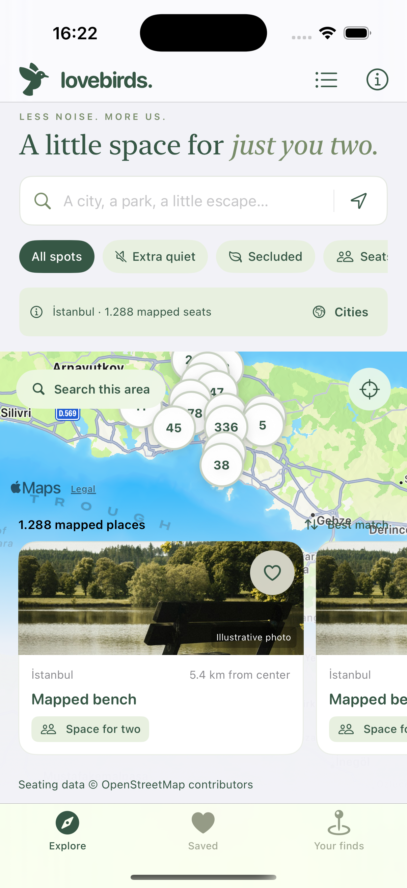

Less noise. More us.
A little space
for just
you two.
Find a bench, a waterside pause, a place to sit together. LoveBirds helps you explore mapped seating and keep the places that feel like yours.
Made for iPhone · iOS 17 or later · Coming to the App Store

A starting point for your next walk
Four cities.
Thousands of little pauses.
Start with 6,748 mapped benches and picnic tables. City seat lists are included in the app, so you can browse them even when a live search is unavailable.
Ankara
413mapped seats · 15 km areaAntalya
71mapped seats · 6 km areaLondon
4,976mapped seats · 5 km areaBounded OpenStreetMap extracts retrieved on 18 October 2026; areas show search radii, not complete city coverage. 671 seats have a mapped numeric capacity of at least two. Live crowds, quietness, privacy, and access are unverified. Map tiles need an internet connection or an existing cache. Explore the data.
Make room for a moment
From a pin
to a place
you’ll remember.
Find somewhere to sit together
Choose a city, search a park, or explore around the map. Filter for mapped capacity of two or more, a backrest, or a picnic table. Unknown details stay unknown.
Look a little closer
Open the original map record, check the available details, and get walking directions with Apple Maps. Quiet potential on supported live searches is an estimate from mapped surroundings.
Keep the good ones
Save a favorite, add a personal find, or leave yourself a note about your visit. Your collection is stored on your iPhone, without a LoveBirds account.